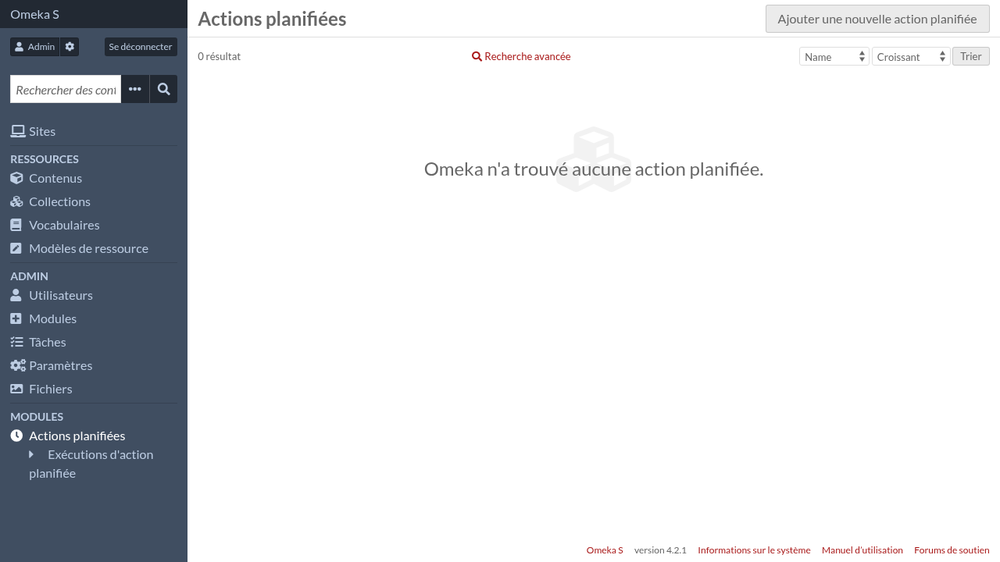
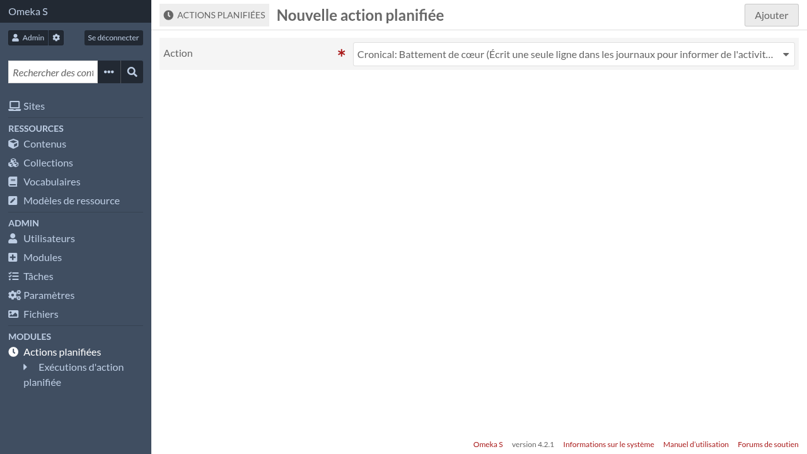
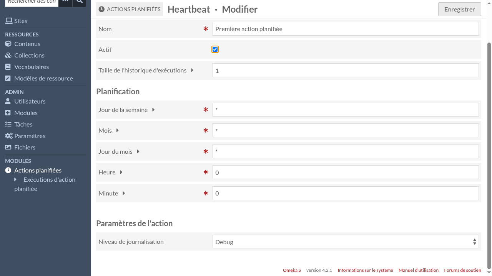
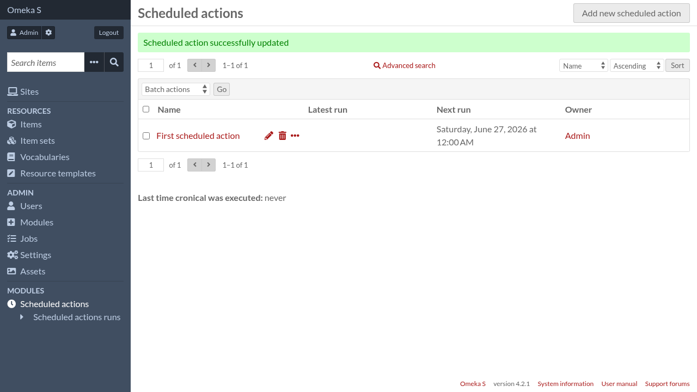

Actions planifiées
Pour gérer les actions planifiées, allez dans l’interface d’administration d’Omeka S et cliquez sur « Actions planifiées » dans le menu de navigation.

Cliquez sur « Ajouter une nouvelle action planifiée »

Choisissez une action et cliquez sur le bouton « Ajouter ».
Cronical fournit quelques actions intégrées. D’autres modules activés peuvent fournir plus d’actions.

Les actions planifiées ont les paramètres suivants:
- Nom
Un nom descriptif pour cette action planifiée particulière (une même action peut être planifiée plusieurs fois).
- Active
Seules les actions planifiées actives sont exécutées, vous pouvez donc utiliser ce paramètre pour désactiver temporairement une action planifiée.
- Taille de l’historique d’exécutions
Chaque fois qu’une action planifiée est exécutée, Cronical garde quelques informations sur son exécution, comme son heure de début ou son statut.
Pour éviter d’avoir une table de base de données en constant expansion, Cronical garde uniquement les exécutions les plus récentes et supprime les autres. Ce paramètre permet de configurer combien d’exécutions vous voulez garder pour cette action planifiée.
La section suivante permet de configurer quand l’action sera exécutée. Elle devrait être familière à ceux qui sont habitués à cron mais il y a quelques différences.
- Jour de la semaine
La jour de la semaine durant lequel l’action sera exécuté. Peut être n’importe quelle expression cron valide, par exemple:
0signifie dimanche1-5signifie de lundi à vendredi*/2signifie dimanche, mardi, jeudi et samedi0,6signifie dimanche et samedi
- Mois
Le mois durant lequel l’action sera exécutée. Peut être n’importe quelle expression cron valide, par exemple:
1signifie janvier2-6signifie de février à juin*/2signifie janvier, mars, mai, juillet, septembre et novembre3,6,9signifie mars, juin et septembre
- Jour du mois
Le jour du mois durant lequel l’action sera exécutée. Peut être n’importe quelle expression cron valide, par exemple:
1signifie le 1er jour du mois1-10signifie du 1er au 10ème jour du mois*/5signifie le 1er, 6ème, 11ème, 21ème, 26ème et (s’il existe) le 31ème jour du mois1,11,21signifie le 1er, 11ème et 21ème jour du mois
- Heure
L’heure à laquelle l’action sera exécutée. Contrairement aux autres paramètres, seul un nombre est autorisé ici.
- Minute
La minute à laquelle l’action sera exécutée. Contrairement aux autres paramètres, seul un nombre est autorisé ici.
Enfin, si l’action elle-même déclare plus de paramètres, ils seront configurables ici.
Quand vous avez fini, cliquez sur le bouton « Enregistrer ».

Propriétaire d’une action planifiée
Les actions planifiées appartiennent à l’utilisateur l’ayant créée. Quand une action est exécutée, elle agit comme si le propriétaire était authentifié. Donc par exemple, si une action crée un contenu sans spécifier explicitement un propriétaire, le propriétaire de l’action planifiée sera le propriétaire du nouveau contenu.
Actuellement il n’est pas possible de modifier le propriétaire d’une action planifiée.
Actions planifiées système
Les administrateurs système ont la possibilité d’ajouter des actions planifiées spéciales, appelées actions planifiées système. Ces actions planifiées apparaissent dans l’interface d’administration Omeka S mais ne peuvent pas être modifiées ni supprimées.
Les actions planifiées système peuvent être ajoutées en utilisant le script bin/schedule-add. Une utilisation typique ressemble à ça:
bin/schedule-add \
--owner-id 1 \
--action "Cronical\\Action\\Heartbeat" \
--cron-expression "0 0 * * *" \
--system \
--name "Heartbeat (system)" \
--settings '{"log_level": 4}'
Les actions planifiées ajoutées par ce script sont actives immédiatement.
Exécutez bin/schedule-add --help pour plus de documentation.
bin/schedule-add a la possibilité d’outrepasser les limitations sur l’heure et la minute, donc il peut être utilisé pour planifier une action toutes les minutes (par exemple). Il peut aussi être utilisé pour ajouter des actions planifiées non-système.